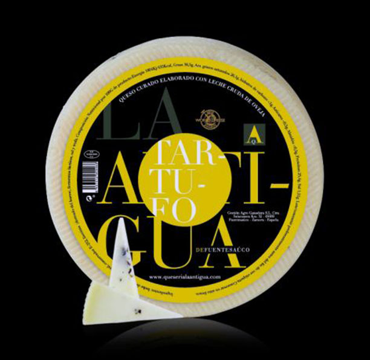

|  | Formatge d'Ovella elaborat amb llet crua d'ovella i tòfona del Piemont italià. Amb un període de curació aproximat de 5 mesos i madurat en les millors condicions atmosfèriques, fa que es potencien totes les aromes a mesura que el formatge va perdent la humitat inicial de l'elaboració. L'aportació de sabors i aromes pròpies del formatge d'ovella durant el seu període de maduració, juntament amb els quals aporta la tòfona confereixen a aquest producte unes característiques úniques i exquisides. Més en: http://www.queserialaantigua.com/nuestros-quesos/queso-de-oveja-curado-la-antigua-al-tartufo |